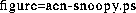

In this paper, a ``session'' is the contiguous period of time that a user is ``connected'' to a system. A ``conference'' is the period of time during which a group of interacting users are connected simultaneously. Interestingly, CSCW architectures interpret sessions and conferences quite differently, which affects their support for state persistence.
In the WWW architecture, a session is best viewed as a single http request, which is typically less than a second long. (Server push/client pull mechanisms enable much longer sessions, of course.) This interpretation of a session as a single http request aligns well with the intent of the designers of the WWW architecture, who state:
[HTTP] is stateless... The stateless model is efficient when a link from one object may lead equally well to an object stored on the same server, or to another distant object. [A URI] should always refer to the ``same'' object. This also makes a stateless protocol appropriate, as it returns results based on the URI that are irrelevant of any previous operations performed by the client. [2]
More colloquially speaking, the WWW architecture has no explicit representation of users who ``visit'' a single web site and ``surf'' through the artifacts provided by its server over the course of minutes or hours. Similarly, the WWW architecture does not represent or support conferences. Given the clear intents of the WWW designers with respect to state (and its lack thereof), and the paucity of support for sessions and conferences, there is obviously no support for persistent state across sessions or conferences.
In the replicated database version of Lotus Notes, a session logically consists of the period of contiguous time during which the user is connected to the Notes database. Any state changes stored in this database will persist until the next session. However, the fact that databases are locally replicated eliminates the possibility of conferences, and also means that state information collected on one database from one user is not available to another user until synchronization occurs. The central server database version of Notes does support sessions, conferences, and persistent state across sessions and conferences.
Computer-based conferencing is the raison d'être of GroupKit, so the architecture naturally includes well-defined and explicit representations and support for both sessions and conferences. However, users, artifacts, sessions, and conferences are ephemeral in GroupKit: nothing persists beyond or between conferences. ``The concept of users exists only within the current real-time conference session. No information is held about past users in a conference, nor any notion of a long term community [8].''
The Egret architecture provides both representations and support for sessions, and support (such as chat tools) but no explicit representations for conferences of simultaneously connected, interacting users. State persists across sessions and conferences.
In our experience, support for state manipulation within and between sessions and conferences involves the following four requirements:
The WWW architecture supports none of these requirements; GroupKit supports the first two; Lotus Notes and Egret support all four. The last requirement, informing users of what happened of interest while they were absent, can be particularly problematic to support in an efficient and responsive fashion. In Egret, some of our architectural support for agents came specifically from the fourth requirement, because it is much simpler to satisfy with an agent that remains continuously connected and serves as a kind of ``virtual participant'' in all sessions and conferences. Figure 1 illustrates one agent-based mechanism in Egret that maintains state information within and between sessions.

Figure 1: The ``Snoopy'' mechanism in Egret. This simple agent-based mechanism
observes the collaborative process, collects state information about each
participant, and posts a summary periodically to each connected user.